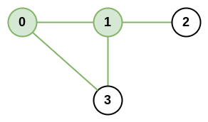
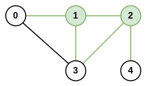

| Category | Difficulty | Likes | Dislikes |
|---|---|---|---|
| Algorithms | Medium | 2436 | 389 |
microsoft
There is an infrastructure of n cities with some number of roads connecting these cities. Each roads[i] = [ai, bi] indicates that there is a bidirectional road between cities ai and bi.
The network rank of two different cities is defined as the total number of directly connected roads to either city. If a road is directly connected to both cities, it is only counted once.
The maximal network rank of the infrastructure is the maximum network rank of all pairs of different cities.
Given the integer n and the array roads, return the maximal network rank of the entire infrastructure.
Example 1:

Input: n = 4, roads = [[0,1],[0,3],[1,2],[1,3]]
Output: 4
Explanation: The network rank of cities 0 and 1 is 4 as there are 4 roads that are connected to either 0 or 1. The road between 0 and 1 is only counted once.Example 2:

Input: n = 5, roads = [[0,1],[0,3],[1,2],[1,3],[2,3],[2,4]]
Output: 5
Explanation: There are 5 roads that are connected to cities 1 or 2.Example 3:
Input: n = 8, roads = [[0,1],[1,2],[2,3],[2,4],[5,6],[5,7]]
Output: 5
Explanation: The network rank of 2 and 5 is 5. Notice that all the cities do not have to be connected.
Constraints:
2 <= n <= 1000 <= roads.length <= n * (n - 1) / 2roads[i].length == 20 <= ai, bi <= n-1ai != bi